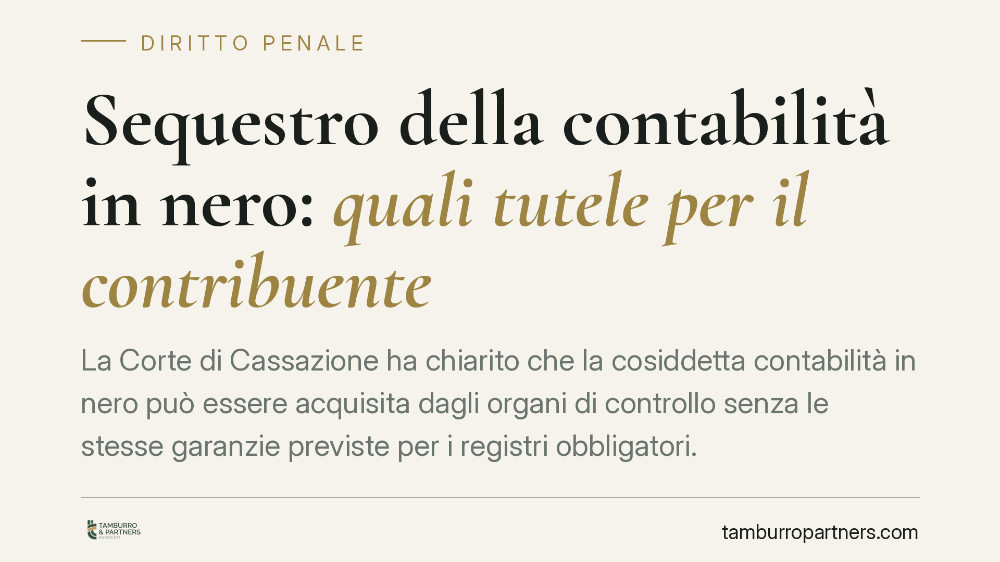

Sequestro della contabilità in nero: quali tutele per il contribuente
La Corte di Cassazione ha chiarito che la cosiddetta contabilità in nero può essere acquisita dagli organi di controllo senza le stesse garanzie previste per i registri obbligatori. Una distinzione tecnica dalle conseguenze concrete rilevanti: chi tiene una doppia contabilità è più esposto sia sul fronte fiscale sia su quello penale.

Il fatto
Un imprenditore contesta l'acquisizione, da parte della Guardia di Finanza, di documentazione contabile parallela rinvenuta durante una verifica. La difesa lamenta la mancata osservanza delle garanzie procedurali che l'ordinamento riserva alle scritture contabili.
La Cassazione respinge l'impostazione: la documentazione non ufficiale (annotazioni di ricavi non dichiarati, brogliacci, contabilità parallela) non gode delle stesse tutele riconosciute ai registri obbligatori. Il principio rafforza la posizione degli organi di controllo nell'azione contro le attività occulte.
Inquadramento normativo
L'art. 52 del d.p.r. 633/1972 disciplina i poteri di accesso, ispezione e verifica in materia di IVA (poi estesi alle imposte dirette). La norma prevede specifiche cautele: per l'apertura coattiva di plichi sigillati, borse e casseforti, o per l'esame di documenti coperti dal segreto professionale, occorre di regola l'autorizzazione dell'autorità giudiziaria.
Queste garanzie sono costruite attorno a un presupposto: la tutela di sfere protette (domicilio, corrispondenza, segreto professionale) e la regolarità del rapporto tributario documentato. La contabilità in nero, per definizione, si colloca fuori da questo perimetro. Non è documentazione ufficiale che il contribuente ha diritto a veder trattata secondo procedure formali: è la prova materiale di un occultamento.
Da qui la conclusione della Corte. Le annotazioni extracontabili possono essere acquisite e utilizzate senza che il contribuente possa invocare, a proprio favore, le formalità pensate per le scritture regolari. La ratio è coerente: non si può pretendere una protezione procedurale rafforzata per documenti la cui stessa esistenza dimostra la violazione degli obblighi dichiarativi.
Perché conta
La distinzione ha effetti su due piani.
Sul piano fiscale, la contabilità in nero legittima l'accertamento induttivo: l'Agenzia delle Entrate può ricostruire i ricavi effettivi prescindendo dalle scritture ufficiali, ritenute inattendibili. Il documento occulto diventa la base per rideterminare il reddito e l'imposta dovuta, con le relative sanzioni.
Sul piano penale, il rinvenimento di una doppia contabilità è spesso l'elemento che fa scattare le fattispecie del d.lgs. 74/2000: dalla dichiarazione infedele all'omessa dichiarazione, fino all'occultamento o distruzione di documenti contabili. Il brogliaccio non è solo un problema tributario: può costituire prova diretta del dolo, cioè della volontà di sottrarre materia imponibile.
È questo il punto che l'orientamento rende esplicito. Chi affianca ai registri ufficiali una contabilità parallela non gode di alcuna "zona franca" procedurale. La stessa esistenza del documento occulto lo rende acquisibile e utilizzabile contro chi lo ha prodotto.
Implicazioni pratiche
Per l'imprenditore il messaggio è netto. La contabilità in nero non è un rischio gestibile: è un moltiplicatore di responsabilità. Un unico documento può alimentare contemporaneamente un accertamento tributario, un procedimento sanzionatorio amministrativo e un'indagine penale.
È opportuno ricordare che la linea di confine tra documentazione lecita e prova di un illecito non sempre è evidente. Appunti personali, prospetti gestionali interni, file di lavoro possono essere interpretati in chiave accusatoria se non risultano coerenti con le scritture ufficiali. La qualificazione dipende dal contenuto e dal contesto, non dal nome che si dà al documento.
Cosa fare in concreto
- Verifica la coerenza tra scritture ufficiali e documenti interni. Ogni prospetto gestionale deve riconciliarsi con la contabilità dichiarata; discrepanze non spiegate sono un rischio.
- Non tenere annotazioni parallele di ricavi o costi. Regolarizza tutto ciò che riguarda l'attività d'impresa nei registri previsti dalla legge.
- Durante una verifica, richiedi sempre copia del processo verbale. Annota le circostanze dell'accesso e i documenti acquisiti.
- Contatta un difensore prima di rendere dichiarazioni. Le spiegazioni fornite a caldo agli organi di controllo possono essere utilizzate nel successivo procedimento.
- Valuta gli istituti deflativi. Ravvedimento operoso e definizioni agevolate possono ridurre l'esposizione, purché attivati per tempo e con assistenza qualificata.
La decisione conferma un principio consolidato: la protezione dell'ordinamento presuppone la regolarità. Chi opera fuori dalle regole non può invocarne le garanzie a proprio vantaggio.
Disclaimer
Contributo informativo a cura di Tamburro & Partners - Avv. Giuseppe Tamburro. Non costituisce parere legale.
Ogni condominio ha una storia a sé.
Se gestisci un'amministrazione e vuoi un confronto su una specifica questione condominiale, scrivi allo studio. Ti rispondiamo entro un giorno lavorativo.